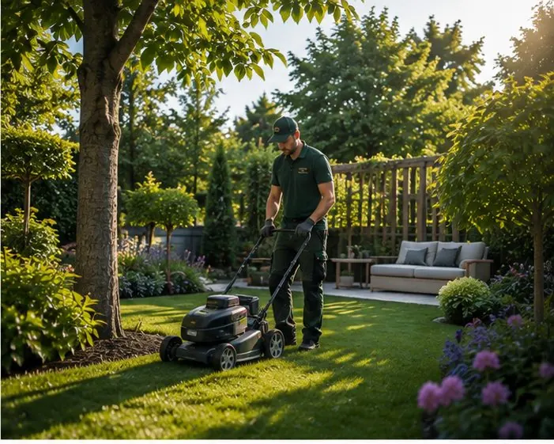
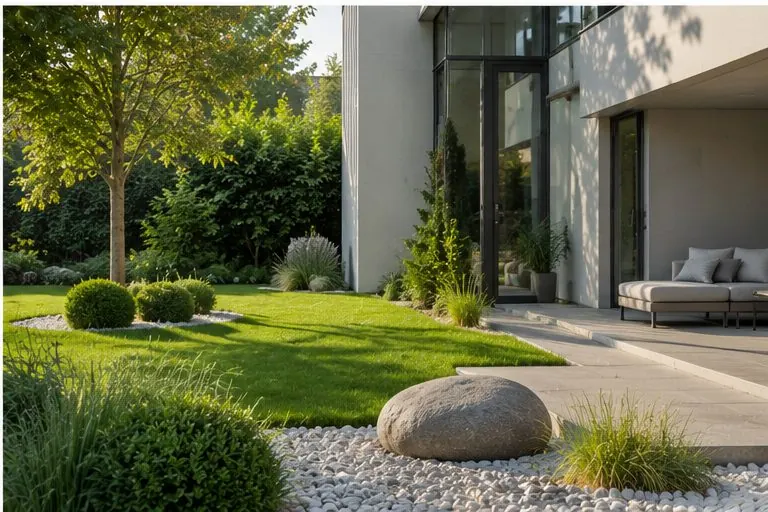
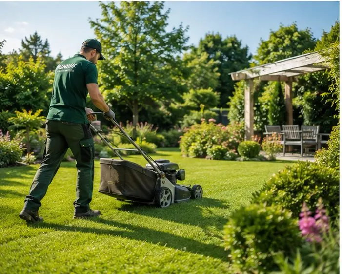
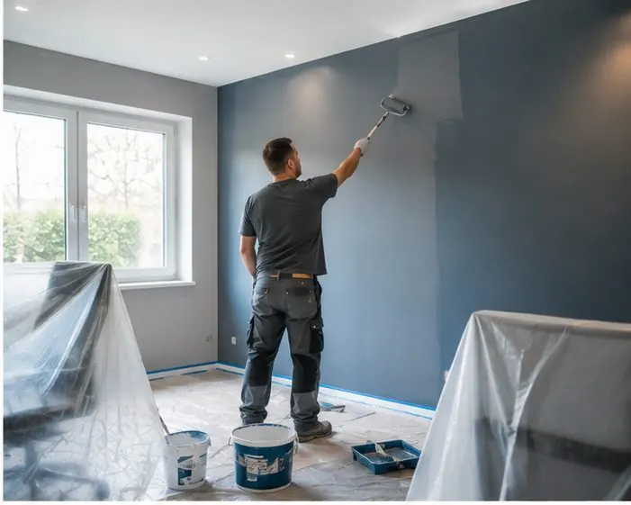
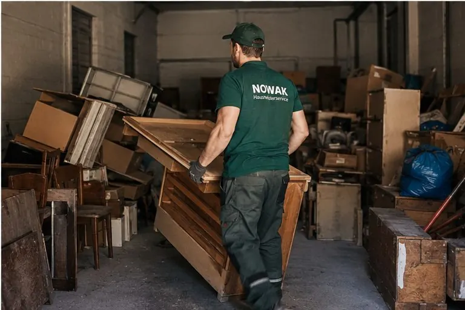
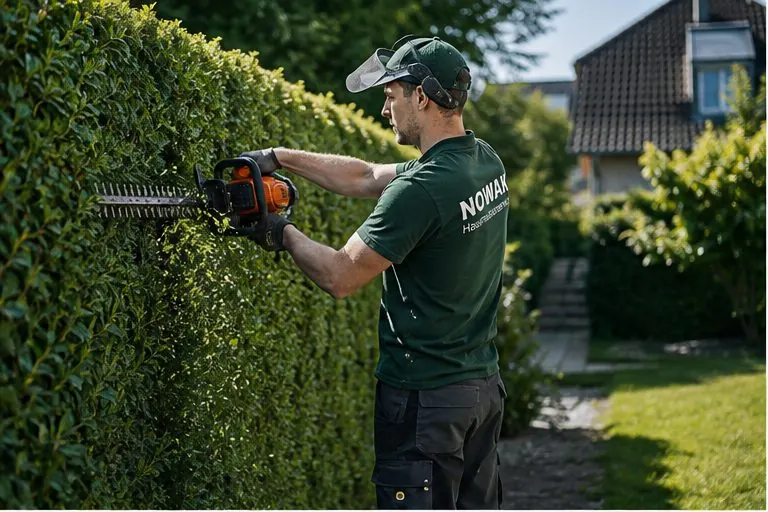
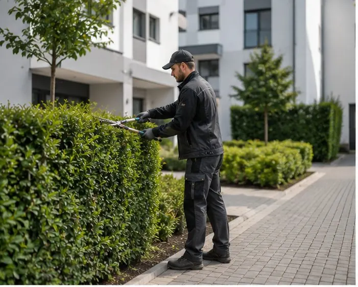
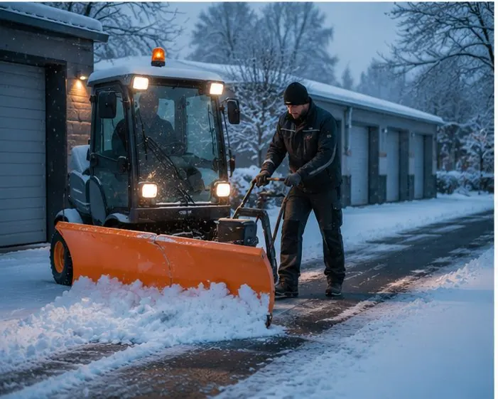
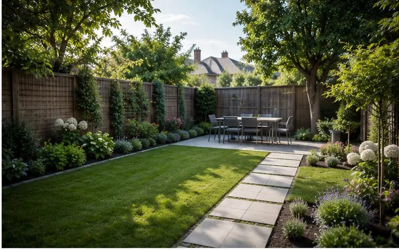

Privatkunden & Senioren
Wenn die Gartenarbeit zu viel wird oder Reparaturen liegen bleiben: Wir kommen vorbei und packen an.
- Feste Termine, pünktliches Erscheinen
- Ein Ansprechpartner für alles
- Geduldige, verständliche Beratung
Regional. Zuverlässig. Aus einer Hand.
Garten, Winterdienst, Reparaturen, Entrümpelung oder die komplette Objektbetreuung – der Hausmeisterservice Nowak ist Ihr Partner für alles rund um Haus, Garten und Grundstück.
Kommt Ihnen das bekannt vor?

Sie rufen an, wir schauen es uns an, Sie bekommen einen klaren Preis – und dann wird es erledigt. Ohne Hinterherlaufen, ohne Ausreden, ohne böse Überraschungen.
Jetzt unverbindlich anfragenUnsere Leistungen
Ob einmaliger Einsatz oder regelmäßige Betreuung – Sie sagen uns, was ansteht. Wir erledigen es.

Rasen mähen, Beete pflegen, Unkraut entfernen. Regelmäßig oder nach Bedarf – Ihr Garten bleibt gepflegt, ohne dass Sie einen Finger rühren.

Räumen und streuen, bevor der erste Mieter aus dem Haus geht – dokumentiert für Ihre Haftungssicherheit.

Regelmäßige Kontrolle, Kleinreparaturen, Ansprechpartner für Mieter – wie ein Hausmeister, nur verlässlicher.

Tropfender Hahn, klemmende Tür, Wände streichen, Laminat verlegen. Die Dinge, die sonst liegen bleiben – bei uns sind sie schnell erledigt.

Keller, Dachboden oder komplette Haushaltsauflösung – fachgerecht entsorgt, besenrein übergeben.

Saubere Treppenhäuser und gepflegte Gemeinschaftsflächen – im festen Turnus, mit gleichbleibender Qualität.

Formschnitt, Rückschnitt und Fällungen – zur richtigen Jahreszeit, inklusive Abtransport des Schnittguts.

Wege kehren, Laub entfernen, Außenanlagen instand halten – Ihr Grundstück macht immer einen guten Eindruck.
Ihr Anliegen ist nicht dabei? Fragen Sie einfach – meistens können wir helfen. Und wenn nicht, kennen wir jemanden, der es kann.
Für wen wir arbeiten

Wenn die Gartenarbeit zu viel wird oder Reparaturen liegen bleiben: Wir kommen vorbei und packen an.

Wir betreuen Ihre Objekte zuverlässig – mit Dokumentation, fester Erreichbarkeit und sauberer Abrechnung.

Gepflegte Außenanlagen sind Ihre Visitenkarte. Wir kümmern uns darum – planbar und versichert.
So läuft's
Kein Papierkram, keine Warteschleifen – nur ein klarer Weg von Ihrer Anfrage bis zum aufgeräumten Ergebnis.
Kurz anrufen oder das Formular ausfüllen. Schildern Sie einfach, was ansteht – wir melden uns innerhalb von 24 Stunden zurück.
Bei Bedarf kommen wir kostenlos zur Besichtigung. Danach bekommen Sie ein klares Angebot – ohne Kleingedrucktes.
Zum vereinbarten Termin sind wir da und arbeiten sauber und zügig. Am Ende ist alles aufgeräumt – und Sie haben eine Sorge weniger.
Vorher / Nachher
Ziehen Sie über das Bild. Beide Aufnahmen zeigen exakt denselben Blickwinkel – links, wie wir es vorgefunden haben, rechts, wie wir es übergeben haben.

Über uns
Der Hausmeisterservice Nowak ist ein inhabergeführter Betrieb aus der Region. Was als klassischer Hausmeisterservice begann, ist heute ein eingespieltes Team, das sich um alles rund um Haus, Garten und Grundstück kümmert.
Wir versprechen nichts, was wir nicht halten können. Dafür halten wir, was wir versprechen: Wir rufen zurück. Wir kommen pünktlich. Wir arbeiten sauber. Und wir rechnen fair ab.
„Am Ende zählt für mich nur eins: dass unsere Kunden sich auf uns verlassen können. Alles andere ergibt sich daraus."
Einblicke
Das sagen unsere Kunden
„Endlich jemand, der einfach macht, was besprochen wurde. Der Garten sieht besser aus als je zuvor – und ich musste nicht einmal daran denken."
„Wir haben Herrn Nowak drei Objekte übergeben und seitdem deutlich weniger Mieterbeschwerden. Die Zusammenarbeit ist unkompliziert und zuverlässig."
„Die Entrümpelung des Elternhauses hat uns sehr belastet. Das Team war rücksichtsvoll, schnell und hat alles besenrein hinterlassen. Danke dafür."
Häufige Fragen
Das hängt von der Aufgabe ab. Nach einem kurzen Gespräch oder einer Besichtigung bekommen Sie ein klares Angebot – bei regelmäßigen Arbeiten gern als fester Monatspreis. Versteckte Kosten gibt es bei uns nicht.
Wir melden uns innerhalb von 24 Stunden zurück. Kleinere Einsätze schaffen wir oft innerhalb weniger Tage, bei Notfällen versuchen wir es schneller möglich zu machen.
Ja, das ist sogar unser Kerngeschäft. Viele Kunden buchen uns im festen Turnus – wöchentlich, monatlich oder saisonal. Sie müssen sich um nichts mehr kümmern.
Ja. Wir arbeiten ausschließlich mit Betriebshaftpflichtversicherung. Beim Winterdienst dokumentieren wir unsere Einsätze zusätzlich für Ihre Haftungssicherheit.
Fragen Sie trotzdem. Vieles erledigen wir selbst, und für Spezialarbeiten haben wir ein Netzwerk verlässlicher Partnerbetriebe aus der Region.
Kontakt
Wir melden uns innerhalb von 24 Stunden – versprochen. Am schnellsten geht es telefonisch.
Erreichbar Mo–Fr 7–18 Uhr, Sa 8–13 Uhr.
Winterdienst-Notfälle auch außerhalb dieser Zeiten.